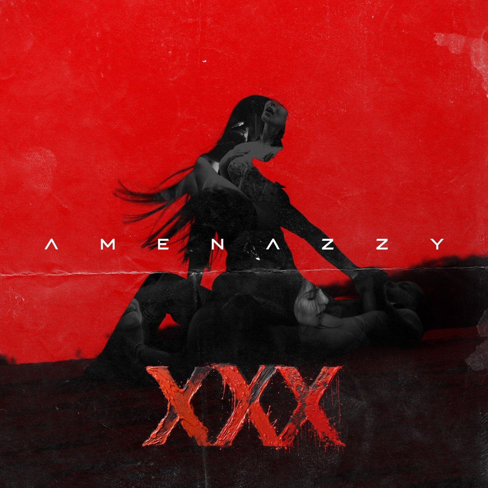

Amenazzy
Año de inicio/finalización:
Amenazzy comenzó su carrera en el año 2013 y sigue activo hasta la actualidad, consolidándose como una figura prominente en el género del reguetón.
Canción Más Popular:
Una de las canciones más populares de Amenazzy es "Solo", en colaboración con Lary Over, la cual ha alcanzado gran éxito en plataformas digitales y en radio.
10 canciones más escuchadas:

Álbum más escuchado/Vendido:
Actualmente, el álbum más escuchado de Amenazzy es "Santo Niño", que ha resonado ampliamente entre sus seguidores y en la industria musical.

Primer Concierto:
El primer concierto conocido de Amenazzy tuvo lugar en 2016 en la República Dominicana, marcando el inicio de su carrera en los escenarios.
Último concierto:
El concierto más reciente de Amenazzy se celebró en 2023 en la República Dominicana, continuando su presencia en vivo frente a sus seguidores.
Primera Canción:
"Después del Party" marcó el debut de Amenazzy como artista en solitario, capturando la atención con su estilo único y su energía contagiosa en el escenario.
Última canción:
La última canción publicada por Amenazzy es "Playa de Noche", mostrando su evolución y versatilidad como artista en la escena musical actual.
Primer álbum:
"Santo Niño" fue el primer álbum de estudio lanzado por Amenazzy, consolidándolo como una figura influyente en la música urbana.
Último álbum:
En 2023, Amenazzy lanzó su último álbum titulado "XXX", mostrando su crecimiento artístico y su capacidad de mantenerse relevante en la industria musical.
Biografía:
Amenazzy, cuyo nombre real es José Daniel Betances, nació en Santiago de los Caballeros, República Dominicana, en 1995. Desde joven mostró interés por la música y se destacó inicialmente en colaboraciones con otros artistas del género urbano. Su carrera despegó en 2015 con el éxito de "La Chanty", y desde entonces ha continuado lanzando hits que han resonado en el público internacionalmente.